Analytical documents
In 9.1 a Dashboard and a Cockpit are distinct document types. Match the document type with its engine when creating or importing a document. Use Running and exploring documents for parameters, saved views and exports.
The analytical model is the core of Knowage Server and covers the whole range of analytical needs, providing many solutions for each analytical area, like reports, cockpits, OLAP documents, KPIs and so on.
The main element of the analytical model is the so called analytical document, a word used to group under a common concept all different types of documents that can be developed with Knowage (report, cockpit, etc.) when performing a BI analysis.
In this chapter we describe step by step how to create a new analytical document. There exist many different document types, each with its own peculiarities. Here we provide a generic overview on common features, will focus on available types peculiarities in each dedicated part.
Main concepts
The creation and management of analytical documents in Knowage involves different elements:
- Template
The template defines the standard layout of a document, including specific information on its appearance and the way contents should be displayed. Templates can be encoded by hand or using Knowage designers, when available. For each analytical document the history of templates is maintained. Old templates can be restored if needed. A new version is saved at each deployment, either manual or from Knowage Studio.
- Dataset
Each document is associated to one or more datasets. The dataset provides actual data that will be represented according to the defined template. That is to say, the dataset provides the actual content of the analysis and the template is in charge of giving it a meaningful structure.
- Data source
In order to retrieve data via the dataset, a source of information must be defined. Depending on the type of document, the data source may be associated to the document either directly or implicitly (via the dataset).
- Parameters
Parameters allow the connection between the document and analytical drivers associated to it. In other words, at document execution time, each driver generates a value that is assigned to the corresponding parameter.
These elements are then combined inside each document engine, in order to produce different analytical documents. This process generates an HTML output, which can be accessed and navigated using a web browser. Other output formats are supported, including XLS, CSV, PDF, XML.
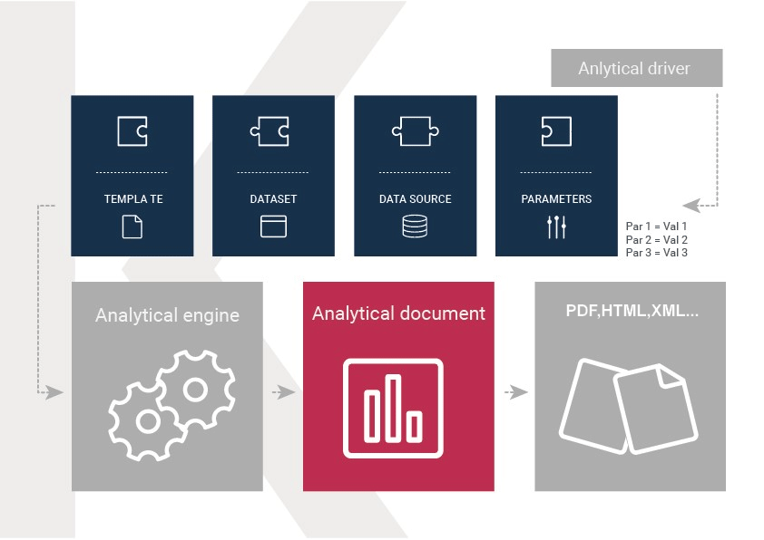
Fig. 42 Components of Knowage analytical document.
Document types
Regardless of their type, all analytical documents interact with some generic components (such as cross-services) and with the specific engine that generate them (e.g. Report engine, OLAP engine). Therefore, all analytical documents are managed in the same way in terms of:
document storage and versioning;
document life cycle, based on a specific approval process including different status (development, test, released, suspended);
multiple positioning on the repository and indirectly first visibility level;
rules to restrict document visibility to some end user profiles;
management of analytical drivers;
multi-format export logic;
attribution of business metadata;
scheduled execution;
collection of auditing and monitoring data;
adding end user notes;
adding bookmarks;
end user evaluation;
sending the document by email;
on-line or off-line (scheduled) execution.
This means that the above mentioned features are also inherited by every new engine that is developed or integrated into Knowage.
In the next sections we describe in detail how to create and manage analytical documents in Knowage.
Register an analytical document
There are two different ways to create a new document on Knowage Server. The first option involves Knowage Studio: within it you can simply click on Deploy and the document window will open with pre-filled options. Please note that Knowage Studio can be used to create Birt document only.
Note
Deploy a document from Knowage Studio
Knowage Studio is the tool that allows to design and upload documents onto Knowage Server. Please refer to the dedicated section for full details and examples.
The second option is to manually create the document on the Server. This is the most general way since the Studio designer is not yet available for all documents types.
Analytical documents on Server
First of all click on Documents Browser from the BI functionalities menu, as shown below.
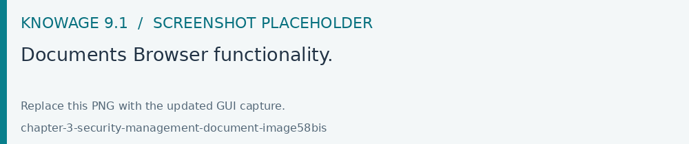
Fig. 43 Documents Browser functionality.
By default the page is divided into two parts, as shown in figure below: in the left side there is the functionality tree representing the folder structure, while on the right you can see the list of all documents contained in the selected folder.
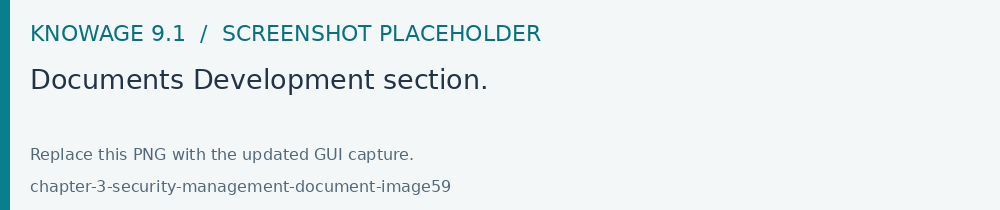
Fig. 44 Documents Development section.
Each line shows the label, the name, the author and the type of the document, while the play button at the end of each row executes the document. Moreover, clicking on a line opens a side panel on the right of the page. Here you can see more metadata information such as the document description, the state and the creation date.
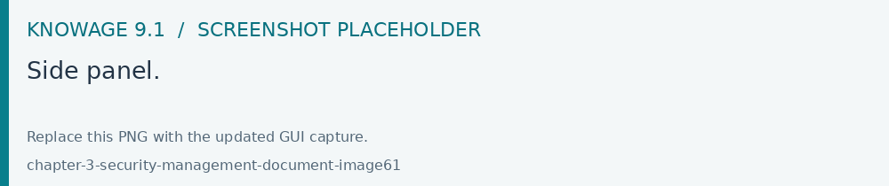
Fig. 45 Side panel.
At the top of this side panel you find four button:


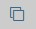
clone the item;


The figure below shows the detail panel of a document. On the left, document details are shown, including name, type, dataset and state. On the right, you can see the functionality tree and the document position. If you want to copy or move a document from a folder into another, check or uncheck the corresponding folders.
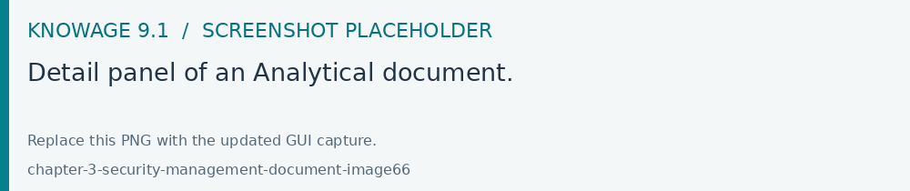
Fig. 46 Detail panel of an Analytical document.
In order to create a new document you need to click on the creation action in the toolbar of the Document Development page. Choose Dashboard, Cockpit or Generic Document from the available creation actions. Please note that not all of them are available in all Knowage products.
To create a new generic document click the above-mentioned button and select Generic Document. You will be shown a window like the one in figure above but with empty fields, in order to allow you to define the document details.
First of all, choose a label, a name and a description. It is important to point out that the label is the unique identifier of the document in Knowage Server. Then, select the type of document and the appropriate engine from the drop down menus, according to the document you are developing (see figure below).
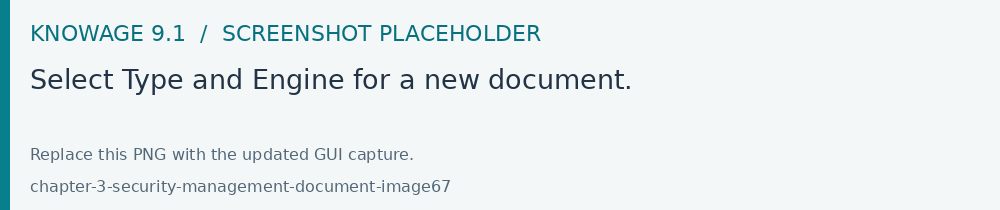
Fig. 47 Select Type and Engine for a new document.
Now you have to select the datasource that will feed your document with data.
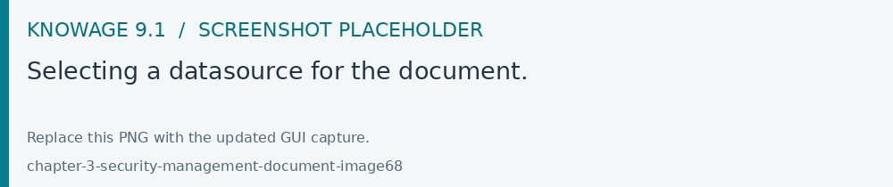
Fig. 48 Selecting a datasource for the document.
You can select the data source from the drop down menu. And select the dataset from the pop-up window and click save.
Note that some types of document do not require the definition of a dataset at this point because they use embedded datasets.
It is advisable to regularly save the document in this process, by clicking the related button save at the top right corner of the window.
Document lifecycle
The next step is to choose the status of the document using the State drop down menu. At any time in fact, each document is associated to a state, which will typically change over time following the development of the project. Those states are:
development;
test;
released;
suspended.
Upon creation, the document is by default in development state. Any time you upload a new template or make changes to the document, it is recommended that the state is updated so as to reflect its actual development state.
The main reason for this is that the state of the document has an impact on its accessibility. As discussed in the behavioural model, Knowage defines role types (administrator, developer, tester, user). States are compatible with the corresponding role type. Administrators can change the state of documents at any time. Developers can not access only the documents with test state. Testers can not see documents in development or suspended state. Users can execute only documents in released state. Note that a tester may change the state of a document from test back to development.
Important
Enterprise Edition only
In KnowageER you may also decide to temporary “lock” a document while he is working with it: it is enough to set the Lock by user item. This prevent other developers from modifying the same document you are working on.
Template Versioning
When you register a document on the Server, you need to associate a template to it. Click on tab History and then on button Add to choose a template from your local file system and upload it.
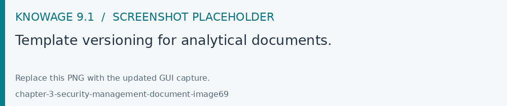
Fig. 49 Template versioning for analytical documents.
You may have edited the template by hand or using the Studio designer. Clearly you will not have to upload the template if you are using the automatic deploy from the Studio.
Knowage Server supports versioning of uploaded templates, as shown below. To view them, click on tab History. All templates are saved with their date and name, and can be easily uploaded or deleted. To upload a template, click on button Add to choose a template from your local file system and upload it: the new template will be uploaded. Using the same list you can download or delete a template.
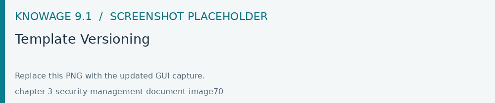
Document Visibility
After having defined all details, you need to choose where the analytical document shall be saved in the functionality tree. This choice has an impact on the visibility of the document. Since folders in the functionality tree are subject to different access policies, which can be set when creating the node, then each document saved in that folder will inherit permissions accordingly.
Warning
Repository structure and rights
The Functionalities tree is Knowage document repository. It is managed by administrator, who is in charge to profile user visibility too.
Note that the same document can be saved in different points of the functionality tree. This allows the administrator to make the document accessible to multiple roles based on visibility rules defined for the containing folder(s). On the right, you can choose where you wish to save the document by ticking the corresponding folder in the tree. If you wish to save it at multiple locations, tick all of them before saving. Each user having access to the containing folder will see the document.
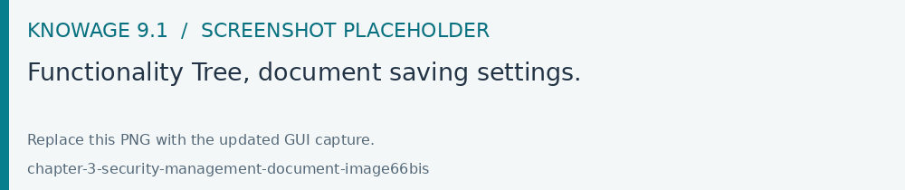
Fig. 50 Functionality Tree, document saving settings.
Visibility rules
In addition to the standard mechanism supported by the functionalities tree, it is possible to further customize access to a document based on user profile attributes. This allows administrators to rule access to documents at a very fine-grained level, beyond simple repository-based policies.
This can be done by editing conditions in the Visibility restrictions section on the right side of Information panel. To add a new condition pick a profile attribute from the drop down menu and assign it a value. This will add a new condition that must be verified to allow a user to access the document. In the same way you can add further conditions, and possibly remove all of them by clicking on the eraser.
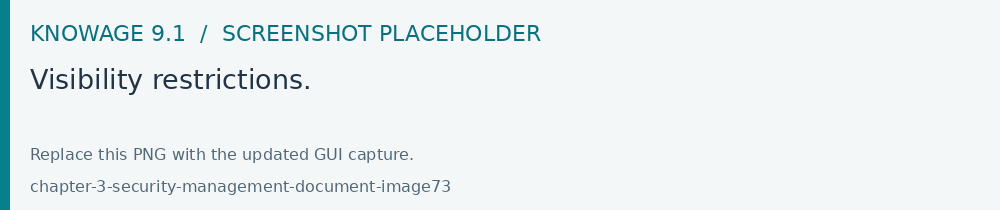
Fig. 51 Visibility restrictions.
Association with analytical drivers
We have already discussed the role of analytical drivers and how they are connected to analytical documents via parameters. In this section we will show how to practically define this association.
We assume that the document template and datasets are correctly set in terms of parameter definition. In particular, they should have been correctly referenced with their URL.
To add a new parameter, you can click on the tab Drivers and then on a Add button, see the next figure.
Fig. 52 Association with analytical driver panel - 1.
Choose a name for the title of driver. Then choose analytical driver from drop-down menu that you wish to associate to the document.
Once you have selected the driver, you should write the exact URL of the corresponding parameter. Then set the different features associated to the driver: you can set its visibility and decide if it is required and multivalue. By default the parameter is visible, not mandatory and not multivalue.
If you want the document not to be visible to end users, untick the Visible checkbox. Note that the parameter will still exist and receive values from the associated driver. However, this will be hidden and the end user will not be able to choose any value for this parameter.
If you want to set it as a required parameter just click on true. In this case, no default value is set. The end user will be asked to choose the value of the parameter before opening the document.
Similarly to set a parameter as multivalue click on true, in this way the user can perform multiple selections on among its values.
After you have completed the definition of a parameter you can save it by clicking on main Save button in the upper right corner. To add further parameters, click on the Add button. Repeat the same procedure as many times you want. At this point you may wish to change the order of parameters (i.e., how they are presented to the user). To do so, click on the arrow in the list of drivers.
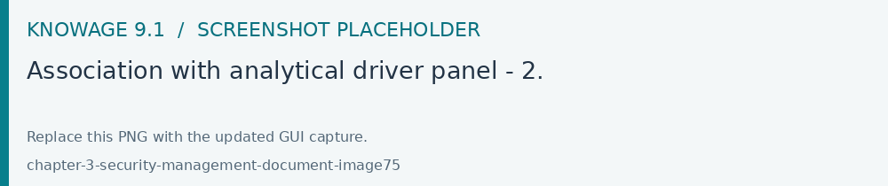
Fig. 53 Association with analytical driver panel - 2.
In the following we will see some special operations that can be performed on drivers associated to a document.
Correlation between parameters
In the context of a document, two different parameters may be connected to each other: this means that the possible values of a parameter are limited by the value(s) of another parameter.
This feature can be useful when two (or more) parameters are logically related. For example, suppose to have a parameter for all the possible countries and another one for all the possible cities. If the user selects a region, it is meaningless to show him all cities: he should only be enabled to choose among the cities in the selected region.
In general, to configure a correlation within a document you should make sure that the LOV associated with the parent parameter and the one associated to the child parameter share at least one column. This column defines which value from the parent parameter will be applied to the child, in order to constrain the results.
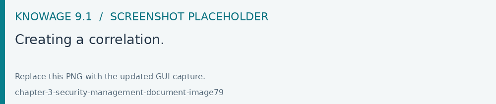
Fig. 54 Creating a correlation.
To set the correlation, select child parameter which will show you the details of that particular driver and then click on the Add condition button to open pop-up window for defining data correlation.
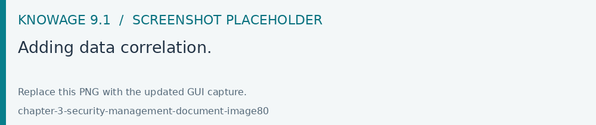
Fig. 55 Adding data correlation.
Here you need to define:
the parent parameter;
the type of logical operator, in order to compare values of the parent parameter with values of the child parameter;
the column, generated by the child parameter, whose value will be compared with the value of the same column in the parent parameter.
If a parameter depends on multiple parent parameters, you can define multiple correlations.
Once defined the correlation, the child parameters will display the labels during the runtime in italics.
Correlation through LOV and drivers
In previous sections we saw how to set correlation through the GUI available in the document detail panel, but there is also the possibility to get the same result using the link between LOV and analytical drivers. More in depth, the user must have previously configured a driver that runs values that can be used in the “where” clause of a SQL query. Then the user must set a query-type LOV using the syntax
We stress that the AD_name is the name of the driver the administrator is trying to reach. Syntax for setting correlation through LOV configuration is:
1 $P{AD_name}
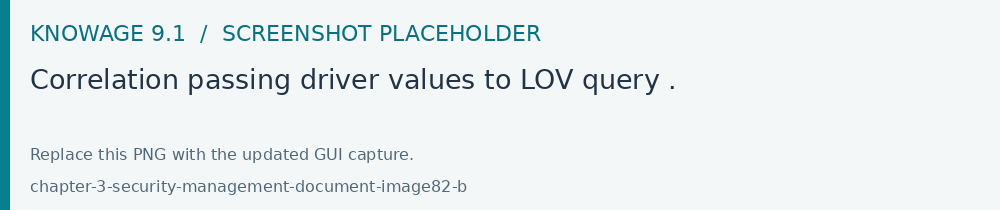
Fig. 56 Correlation passing driver values to LOV query .
As a result, at document execution, as soon as the user pick up a value from the “free” parameter, the other one is filtered and will show only the value related to the previous selection, as shown in Figure below.
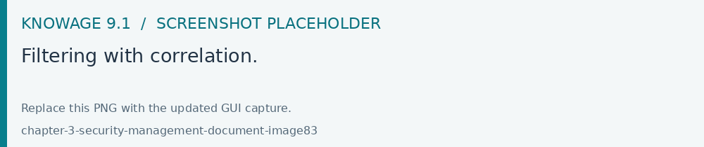
Fig. 57 Filtering with correlation.
Controlled visibility
Another type of relation between parameters is supported by Knowage. It is possible to define values of a parent parameter that force hiding or showing of a child parameter in the parameters mask. Note that in the first case, the child parameter is hidden by default, while in the second case the parameter is shown by default.
To set a visibility expression, click on the Add condition button on the Driver visibility conditions card.
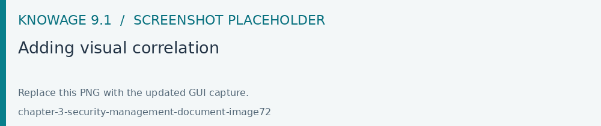
Fig. 58 Adding visual correlation
In the graphical editor you can define visibility rules similarly to correlation ones, as shown in figure below.
Fig. 59 Visibility expressions.